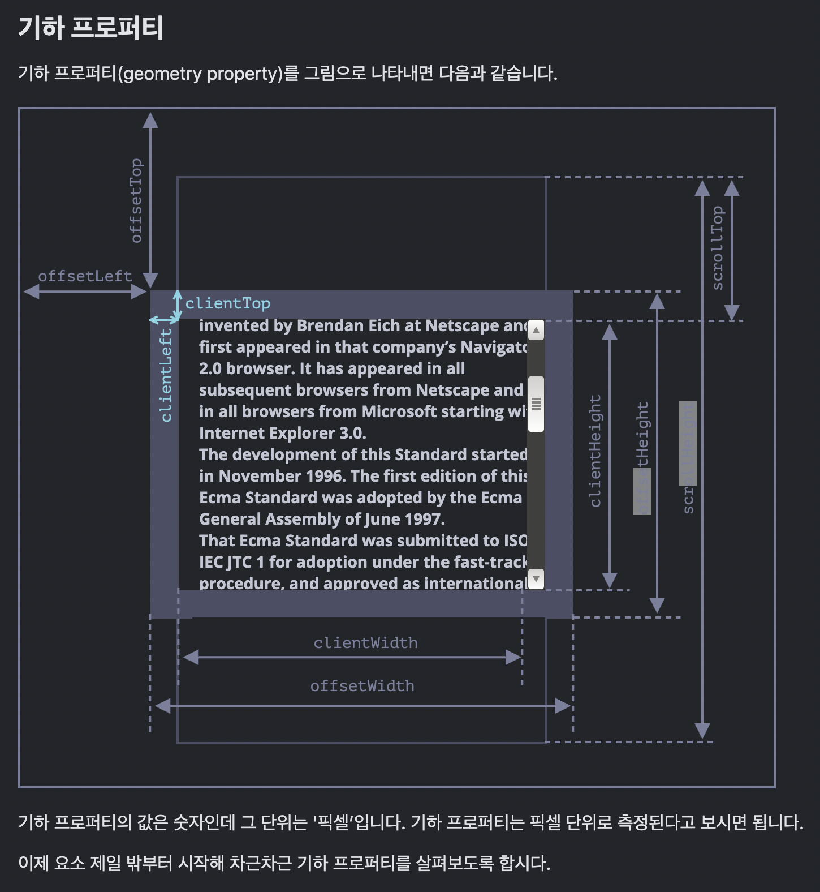

Mission 5 (Leo_05_team)
Chrome(PC)이라면 F12를 눌러, Console을 확인해보세요▷ SYSTEM: 이야!
'힘내라 너구리'가 당신을 응원했습니다!
이 버프로 당신이 하던 일이
신기하게 잘 풀릴꺼에요!
이 축복을 다른 사람에게도 전하세요!
바로가기
Q1. 5주 차에 배운 개념을 정리해봅시다.
빈 칸을 채워 봐주세요. 빈 칸에 들어갈 수 있는 키워드는 다음과 같습니다.
max-, inline level, inline-block, display: none;, visibility: hidden:,
float, static, absolute, relative, absolute, offset, z-index, , screen,
width, min-,미디어 쿼리, block level, position,fixed,
1. inline level요소는 좌에서 우로
요소가 추가됩니다. 반면
block level요소는 위에서 아래로
추가됩니다. 이런 요소 배치 로직을 normal-flow라고 합니다.
2. inline-block 속성값을 사용하면 해당
요소를 inline level 요소처럼 렌더링(배치)하지만 block level 성질을
가질 수 있게 할 수 있습니다.
3. display: none;을 설정하면 해당
요소가 화면에 렌더링 되지 않는 반면(DOM에 존재하지 않음)
visibility: hidden; 을 설정하면 요소가
화면에 보이지는 않지만 렌더링 되며 화면에 공간을 가지고 있게
됩니다(DOM에 존재함).
➡️ 문제 오탈자: 'hidden:'을 'hidden;'으로 수정
4. 요소를 normal flow에서 벗어나서 띄우고 싶을 땐
float 속성을 사용합니다. 기사 글
서두에 이미지를 넣어주거나 첫 글자를 크게 키워서 보여주는 등의
목적으로 만들어진 이 속성은 Flexible Box Layout과 Grid Layout이 나오기
전에 레이아웃을 짜기 위한 목적으로도 쓰였으나, Flexible Box Layout과
Grid Layout이 나온 이후에는 본래 목적 이외에 레이아웃을 짜기 위한
목적으로는 잘 쓰이지 않습니다.


5. 요소를 원하는 위치로 이동시킬 땐
position 속성을 사용합니다. 일반적인
flow 알고리즘은 여러 요소가 한 픽셀을 차지하지 않도록 합니다. 하지만
이 속성을 사용하면 요소(박스)를 겹치게 할 수 있습니다.
6. position 속성의 기본값은
static이고,
absolute,
fixed,
relative값을 가질 수 있습니다. 이 중
absolute는 해당 요소를 normal-flow에서
벗어나게 합니다.
7. offset은 요소가 화면에서 차지하는
영역 전체 크기를 나타내는데, 요소의 너비와 높이에 패딩, 스크롤바,
테두리를 합친 크기이며 마진은 포함되지 않습니다. offsetLeft 값을
지정(CSS에서 left 속성)하면 offsetParent를 기준으로 요소를 오른쪽으로
옮길 수 있고, offsetTop 값을 지정(CSS에서 top 속성)하면 offsetParent를
기준으로 요소를 아래로 옮길 수 있습니다.
참고:
https://ko.javascript.info/size-and-scroll에서 기하 프로피터 섹션

8.요소가 겹칠 때, 어느 요소가 더 위에 올라와야 하는지는 요소의 쌓임
규칙에 따라 결정됩니다. 개발자는
z-index를 사용해 쌓임 순서를 바꿀 수
있습니다.
9.미디어 쿼리를 사용하면 각 미디어
매체에 따라 다른 스타일(CSS style)을 적용할 수 있습니다.
10. screen은 미디어 타입에서 가장 많이
쓰이는 타입입니다. 미디어 특성 중 가장 많이 쓰이는 특성은
width입니다.
11. 미디어 특성은 이름 앞에
min- 또는
max- 접두사를 붙일 수 있습니다. 실제로
반응형 사이트를 제작할 때는 보통 접두사를 붙여서 사용합니다.
Q2. question.html엔 <div>로 감싼 이미지가 하나 있습니다.
엇 그런데 뭔가 이상하네요.
이미지()의 크기는 가로 300px, 세로 300px인데
이미지를 감싸는 div의 크기는 이미지의 크기보다 큽니다.
- 개발자 도구를 열어서 요소와 요소의 computed 값을 캡처해주세요.
- 크기가 보다 큰 이유를 적어보세요.
- 세로 크기를 이미지 크기와 같게 하려면 어떻게 해야 하는지 적어보세요.
question.html 코드
<!DOCTYPE html>
<html lang="ko">
<head>
<title>inline 요소 이해하기</title>
<meta charset="utf-8">
<meta content="width=device-width, initial-scale=1" name="viewport">
</head>
<body>
<div>
<img alt="boostcourse 코칭스터디 모집" src="week5-img-760.png" style="height: 300px;">
</div>
</body>
</html>예제 이미지 (리사이징X)

Q3. 툴팁은 아래 그림처럼 웹사이트에서 부연 정보를
선택적으로 보여주기 위한 수단으로
position: absolute; 가 쓰이는 가장 대표적인 예입니다.
(그림1)

툴팁을 만들고 있다고 가정해봅시다. 관련 요구사항은 다음과 같습니다.
그런데 현재는 다음 그림과 같이 툴팁이 이상하게 출력되고,
툴팁 좌측이 설명을 덧붙이려는 텍스트의 첫 글자 좌측과 맞지 않습니다.
스타일을 수정해 이를 개선해주세요.
(그림2)

- 툴팁 너비는 최소 150px이어야 합니다.
- 툴팁 내 텍스트와 border 색은 검은색입니다.
- 툴팁 내 텍스트 font weight는 400입니다.
- 툴팁 내 텍스트 font size는 0.875rem입니다.
스타일을 제대로 수정했으면 이렇게 툴팁이 보여야 합니다.

question.html 코드
<!DOCTYPE html>
<html lang="ko">
<head>
<title>위치 속성 fixed를 사용해 툴팁 만들어보기</title>
<meta charset="utf-8">
<style>
.tooltip {
/* 처음엔 툴팁이 숨어있습니다. */
display: none;
background: white;
border: 1px solid;
}
/*
마우스를 오버했을 때, 툴팁을 보여줍니다.
*/
.tooltip-trigger:hover .tooltip {
display: block;
}
p {
max-width: 300px;
}
.tooltip-trigger {
font-weight: bold;
color: seagreen;
text-decoration: none;
}
</style>
</head>
<body>
<p>
말풍선 또는 툴팁(tooltip)은 공통
<a href="/" class="tooltip-trigger">
그래픽 유저 인터페이스
<span class="tooltip">
Graphic User Interface
</span>
</a>
요소로, 마우스 포인터라 불리는 커서와 함께 동작한다.
사용자가 커서로 항목을 클릭하지 않고 가리키면 조그마한 상자가 항목 위에 나타나서 보충 설명을 보여준다.
</p>
</body>
</html>
Q4. Tailwind CSS는
빠르게 시장 점유율을 높여가는 CSS 프레임워크입니다.
Tailwind CSS 사이트를 방문해서 디스플레이 사이즈를 변경해가면서
Tailwind CSS는 스크린 사이즈(width) 몇을 기준으로
미디어 쿼리를 분기 처리했는지 분석해보세요.
사이트 링크:
https://tailwindcss.com/